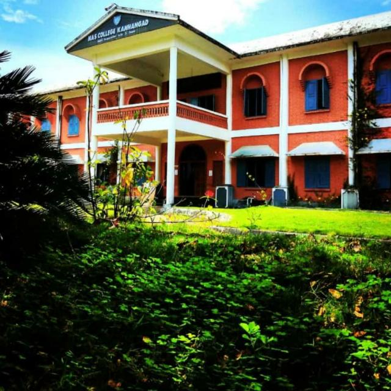

NEHRU ARTS and SCIENCE COLLEGE KANHANGAD
Nehru Arts and Sience College Kanhangad

Nehru Arts and Science College also known as Nehru College,Kanhangad,is a post-Graduate and graduate college in Kanhangad affilliated to the Kannur University.College has been accredicted with 'A' Grade by NAAC in the third cycle.In the NIRF ranking,NASC has been ranked 95 among all the colleges in the country.College was established i the year 1968.NASC offers 10 under graduate programmes and 1 Ph.D. programme.Facilities in the college includes a 2 storey library and a centralized computer center